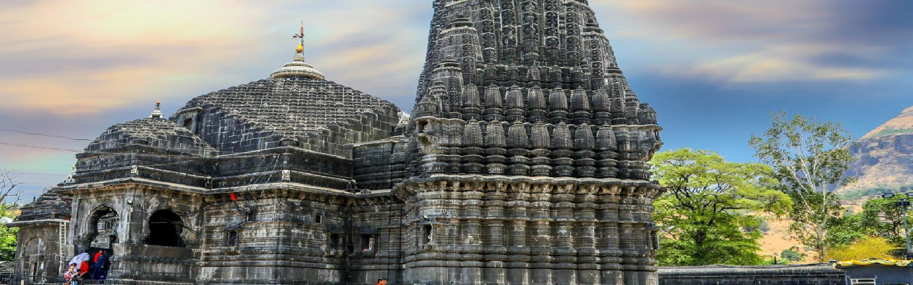

Visit the godly heavens.
Nashik is known for its holy temples. KUMBH the world's largest gathering takes place every 12 years. Spiritual seekers from all over India and from every kind of spiritual path come together to bathe in the sacred Ganga river on this auspicious day, which is calculated based on planetary alignments.

Chill at the wineyards.
Among all, the famous vineyards in Nashik are Sula Vineyards, Vallonne Vineyards, York Winery & Tasting Room, and Chateau d'Ori Vineyard. Sula has emerged as an illustrious name in the Indian Wine Industry. It exports to 26 countries and is listed with Marks & Spencers as an international brand.
Have fun trekking in the mountains.
Nashik is surrounded on all sides by mountain. The greenery of the mountains and the beautiful falls are among the most enjoyed scenaries of the city. Monsoon is one the most active time for trekking.